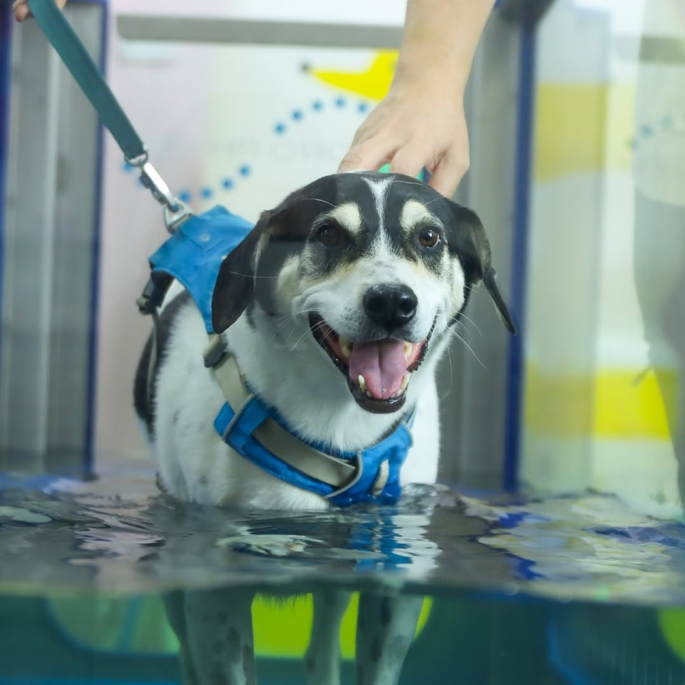

¿Cómo es la recuperación de un perro operado de ligamento cruzado?
La cirugía le arregla la rodilla en cuestión de semanas. El músculo que perdió cojeando tarda meses en regresar, y ese es el trabajo de la rehabilitación. Arranca en la primera o segunda semana después de la cirugía y avanza por fases hasta los tres o cuatro meses, cuando vuelve a correr sin restricción. Cuánto músculo y cuánto apoyo recupera depende de lo que se haga en esos meses.
Por qué la cirugía sola no alcanza
La TPLO cambia el ángulo del hueso para que la rodilla quede estable sin el ligamento. Eso resuelve la parte mecánica y deja pendiente la muscular. Para cuando tu perro llega a pabellón casi siempre lleva semanas o meses cojeando, y el músculo del muslo de esa pata ya se le adelgazó.
Un perro que sale de cirugía sin plan de rehabilitación tiende a tocar el piso con la punta del dedo sin cargar peso en esa pata, y puede quedarse así meses. Mientras tanto la otra rodilla se sobrecarga, la operada se pone rígida y la artrosis que ya tenía avanza más rápido.
Lo mismo aplica para la TTA y para la sutura lateral, las otras dos técnicas que se usan en el país. Cambian los tiempos y los detalles del plan, y el razonamiento es igual.
01 Protocolo
Semana por semana
Este es el esquema general. El plan real de tu perro sale de la valoración de movilidad y de lo que autorice el cirujano en cada control.
-
Semanas 0 a 2
Control del dolor y de la inflamación
Frío sobre la rodilla, láser terapéutico, movilizaciones suaves para que la articulación no se ponga rígida y masaje del muslo. Caminatas con correa corta de tres a cinco minutos, varias veces al día, solo para que haga sus necesidades. Nada de gradas, sofá, carreras ni juego con otros perros. Te enseñamos a aplicar el frío y a hacer las movilizaciones en casa.
-
Semanas 2 a 4
Empieza la carga controlada
Con los puntos retirados y la herida cerrada entra la hidrocaminadora con el agua alta, para que apoye la pata con poco peso encima. Se agregan ejercicios de pasar el peso de un lado a otro, trabajo en tres patas y caminatas de cinco a diez minutos en piso plano. Medimos el grosor del muslo para saber de dónde partimos.
-
Semanas 4 a 8
Fortalecimiento
Sentarse y pararse muchas veces, subir rampa, pasar por encima de barras bajas para obligarlo a doblar la rodilla, caminar en zig zag y trabajar sobre superficies inestables. El agua de la hidrocaminadora baja de nivel para que cargue más peso y la sesión se alarga. Caminatas de quince a veinte minutos con correa. Cerca de la semana seis u ocho el cirujano suele pedir radiografía de control.
-
Semanas 8 a 12
Propiocepción y resistencia
Con el hueso ya soldado se agregan pendientes, escalones controlados, cambios de dirección y, si el cirujano lo autoriza, trote corto en línea recta. Comparamos el grosor del muslo operado contra el sano para ver cuánto músculo lleva recuperado.
-
Meses 3 a 4
Retorno a la actividad
Se sube poco a poco el ejercicio libre. Tu perro vuelve a jugar, correr y subir gradas cuando los dos muslos midan parecido y camine apoyando parejo. Los perros deportivos hacen un par de meses más de acondicionamiento antes de volver a competir.
02 Lo que hay que saber
Tres cosas que hay que saber desde el primer día
- La otra rodilla está en riesgo. Buena parte de los perros que rompen un ligamento cruzado terminan rompiendo el de la otra pata en los dos años siguientes. Por eso el plan trabaja las dos patas y por eso insistimos con el control de peso.
- La restricción de las primeras semanas es la parte más difícil. Tu perro se va a sentir bien mucho antes de estar curado y va a querer correr. Casi todas las complicaciones que vemos empiezan con un salto del sofá en la semana tres.
- La artrosis sigue ahí. La cirugía estabiliza la rodilla y no borra el desgaste que la articulación ya acumuló. A muchos de estos pacientes les sirve un esquema de mantenimiento largo, sobre todo a los perros grandes o con sobrepeso.

03 Coordinación
Trabajamos junto con el cirujano
Antes de la primera sesión pedimos el reporte de la cirugía y las radiografías. Cada cambio de fase se consulta con quien operó. Quien operó recibe por escrito cómo va tu perro, así que en el control ya sabe qué pasó en las semanas de por medio.
- Traé a la primera cita: el reporte de la cirugía, las radiografías de antes y de después, la fecha exacta en que lo operaron y la lista de los medicamentos que está tomando.
- Ortopedistas que pasan consulta con nosotros: el Dr. Eduardo Arias atiende en nuestras instalaciones, así que muchos controles se resuelven en el mismo lugar donde tu perro hace la terapia.
- Si sos veterinario: revisá cómo referir un caso y qué informe recibís de vuelta.
04 Preguntas frecuentes
Ligamento cruzado, dudas comunes
¿Cuándo puede empezar la rehabilitación después de la TPLO?
El manejo del dolor, el frío y las movilizaciones suaves pueden empezar en los primeros días, muchas veces desde el día siguiente a la cirugía. El ejercicio activo y la hidrocaminadora esperan a que la herida cierre, normalmente entre los diez y los catorce días. Siempre coordinamos con el cirujano antes de arrancar.
¿Se puede tratar la ruptura de cruzado sin operar?
En perros de menos de diez kilos, con la ruptura parcial y una familia dispuesta a un manejo estricto, existe la vía sin cirugía: restricción, control de peso, analgesia y rehabilitación. En perros medianos y grandes la cirugía sigue dando mejores resultados. Esa decisión la toman el cirujano y tu veterinario.
Mi perro ya camina bien a las dos semanas. ¿Igual necesita terapia?
Sí. Es muy común que un perro apoye la pata operada a medias durante meses sin que se note a simple vista, y mientras tanto el músculo no vuelve y la otra rodilla se sobrecarga. Midiendo el grosor de los dos muslos y observando cómo camina se ve esa diferencia.
¿Cuántas sesiones lleva un post operatorio de rodilla?
Lo típico son de ocho a doce semanas, empezando con una o dos sesiones por semana y espaciándolas conforme avanza. Los perros grandes, los que llegaron con mucho músculo perdido y los que tienen las dos rodillas afectadas toman más tiempo. Después de la valoración de movilidad te entregamos el plan por escrito con la frecuencia estimada.
Sacar cita
Agendá su valoración
Contanos la fecha en que lo operaron y qué técnica le hicieron, y traé el reporte de la cirugía a la primera cita. Atendemos en Sabana, en Heredia y a domicilio. En las primeras semanas el domicilio ayuda, porque tu perro no tiene que subirse al carro con la rodilla recién operada.